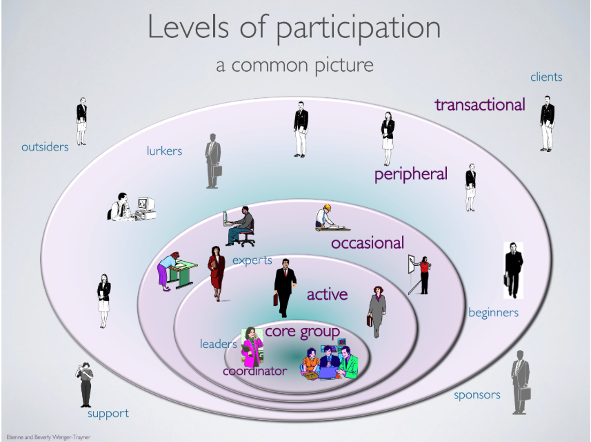
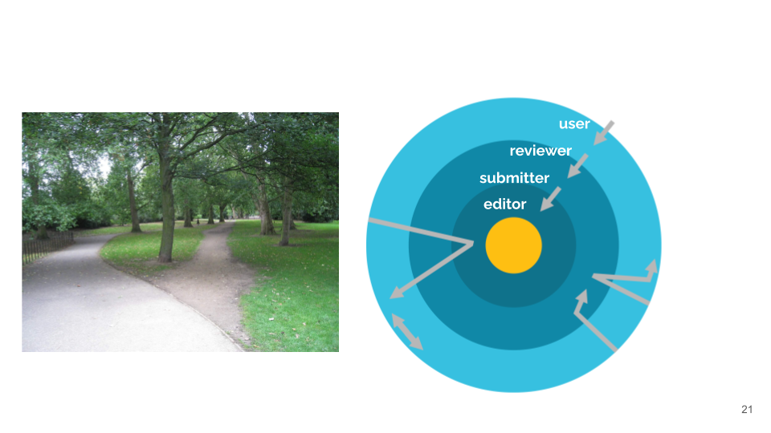

Openscapes Mentor communities are Communities of Practice
Stefanie Butland ![]()
This post comes from my notes introducing the concept of a community of practice to NOAA Fisheries Openscapes Mentors – and it applies to all Openscapes Mentors and work we do. I’m a scientist-turned-enabler. The knowledge I shared leverages my training in scientific community engagement from the CSCCE (Center for Scientific Collaboration and Community Engagement), resources published by Etienne & Beverly Wenger-Traynor (from which I liberally quote), and my work as rOpenSci’s first-ever Community Manager. My goals were to lay a foundation of concepts and have NOAA Fisheries Mentors recognize they already are a community of practice and how they belong. Unless cited otherwise, all quoted text is from (Wenger-Trayner and Wenger-Trayner 2015).
“Communities of practice (CoP) are groups of people who share a concern or a passion for something they do and learn how to do it better as they interact regularly.” - (Wenger-Trayner and Wenger-Trayner 2015)
“Not everything called a community is a community of practice. A neighborhood …is often called a community, but is usually not a community of practice.” Three elements are crucial. As you read these, do you see yourself as a member of a CoP?
The domain. “Membership implies a commitment to the domain, and therefore a shared competence that distinguishes members from others.”
The community. “In pursuing their interest in their domain, members engage in joint activities and discussions, help each other, and share information. They build relationships that enable them to learn from each other; they care about their standing with each other.”
The practice. More than just a group of people who love sci-fi books, “members of a community of practice are practitioners. They develop a shared repertoire of resources: experiences, stories, tools, ways of addressing recurring problems—in short a shared practice. This takes time and sustained interaction.”
The Openscapes and NMFS Open Science teams together work to scaffold and support the CoP. The domain is folks supporting NOAA Fisheries’ Mission: the stewardship of the nation’s ocean resources and their habitat. The community is the NOAA Fisheries Mentors that meet weekly for Mentors Calls and Coworking and independently to work on shared goals. The practice shows up in the MentorActivities GitHub Project that houses discussions and points to resources Mentors are working on, like the PIFSC_DataReport_Template and the PAM_National_Network.
How do we work in a community of practice?
“Communities of practice enable practitioners to take collective responsibility for managing the knowledge they need, recognizing that, given the proper structure, they are in the best position to do this.” - (Wenger-Trayner and Wenger-Trayner 2015)
Let’s start with some relatable examples of CoPs outside of science & technology. Discussions among nurses who meet regularly for lunch in the cafeteria are one of their main sources of knowledge about how to care for patients. Impressionist painters found they shared an interest in painting landscape and contemporary life rather than historical or mythological scenes. They often went out into the countryside together to paint, and had meetups in cafes for discussions about their practice (Wenger-Trayner and Wenger-Trayner 2015) (Wikipedia).
Making change as a CoP and managing change are two very different things. This is different from other “ownership” models we’re used to. Working as a CoP requires opening up ownership, and a culture where people feel safe to speak up with a bold idea, ask for help, or share early work in progress. As a participant, you may not agree with everything, but you desire to be a positive force.

An individual’s level of participation and role in a CoP changes over time according to their needs and capacity. One person’s activities over time can look like a path through the diagram above and people may have similar or different paths. I’ll use the rOpenSci CoP to illustrate this example from the open science world. rOpenSci is a federated open source software community that runs a rigorous and collegial public Software Peer Review process. It offers a welcoming home for R packages for a lot of researchers and helps them build their own tools by developing and sharing standards. These are developed jointly by staff and community and iterated in response to questions, GitHub issues, pull requests, perspectives in blog posts, and discussions in public community calls.

Our Openscapes CoP is made of people within and across agencies: there are paths within NOAA Fisheries Openscapes CoP that also invites them with the broader Openscapes CoP. Our focus in Fall 2026 Champions Cohorts is to grow the CoP further by extending the invitation to people working across the data life cycle who don’t yet see themselves as belonging. What does this look like? How do we grow the NOAA Fisheries Openscapes Mentors community (of practice) with intention? How do we adapt our Champions lesson on Open Communities?
Communities of practice in the age of AI
A healthy CoP starts small and is built on shared values and trust. New people joining a healthy CoP see implicit role-modeling of what we do and how we do it. Members can say what they get from this CoP that they can’t get anywhere else, and these are often both technical and social impacts.
Very recently, Mara Averick has written about What We’re No Longer Seeing: AI and the Invisible Newcomer in Open Source:
“The communities that come through this in shape will be the ones oriented around relationships and narrative—not tooling, not clever onboarding flows, not any one platform. The technology stack underneath a community is replaceable. What isn’t replaceable is whether the people in it are in real relationship with each other and with the project, and whether the project has a story about itself that someone can find their way into. That sounds soft. It is the hard part. Invitation has to come from someone already inside the community—someone with standing, someone whose attention means something—saying out loud to a particular person: we see you, and there’s a place for you here.” – (Averick 2026)
This topic has come up now in conversations with our NOAA Fisheries community, with our ESA Openscapes Champions and our new partners at Lampata and the European Space Agency, as well as resparking conversations online. We’re hosting a Community Call in early fall 2026 to dig in to some of these things. Please stay tuned and join us!
References
Citation
@online{butland2026,
author = {Butland, Stefanie},
title = {Openscapes {Mentor} Communities Are {Communities} of
{Practice}},
date = {2026-07-15},
url = {https://openscapes.org/blog/2026-07-15-community-of-practice/},
langid = {en}
}